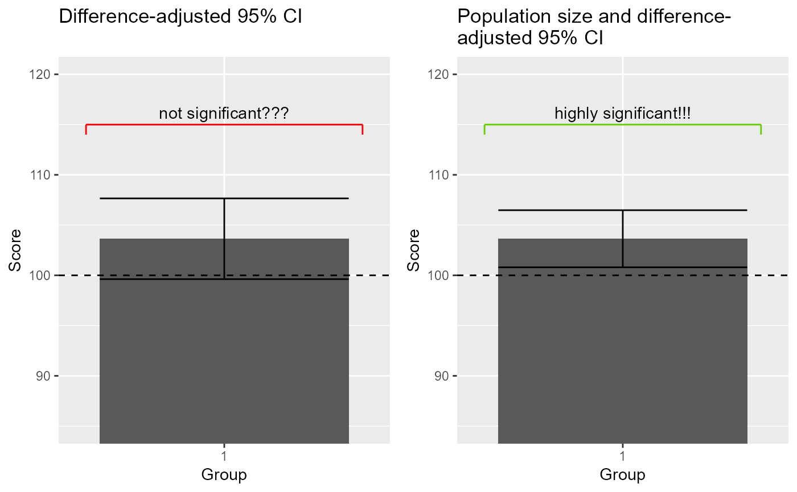

dataFigure4.RdThe data, inspired from (Cousineau 2017) , shows an example where the "stand-alone" 95% confidence interval of the means returns a result in contradiction with the result of a statistical test. The paradoxical result is resolved by using adjusted confidence intervals, here the population size-adjusted confidence interval.
data(dataFigure4)
An object of class data.frame.
doi: 10.5709/acp-0214-z
Cousineau D (2017). “Varieties of confidence intervals.” Advances in Cognitive Psychology, 13, 140--155. doi: 10.5709/acp-0214-z , https://doi.org/10.5709/acp-0214-z.
library(ggplot2) library(gridExtra) data(dataFigure4) options(superb.feedback = 'none') # shut down 'warnings' and 'design' interpretation messages ## realize the plot with unadjusted (left) and ajusted (right) 95% confidence intervals plt4a = superbPlot(dataFigure4, BSFactor = "group", adjustments=list(purpose = "single", popSize = Inf), variables = c("score"), plotStyle="bar" ) + xlab("Group") + ylab("Score") + labs(title="Difference-adjusted 95% CI\n") + coord_cartesian( ylim = c(85,115) ) + geom_hline(yintercept = 100, colour = "black", size = 0.5, linetype=2) plt4b = superbPlot(dataFigure4, BSFactor = "group", adjustments=list(purpose = "single", popSize = 50 ), variables = c("score"), plotStyle="bar" ) + xlab("Group") + ylab("Score") + labs(title="Population size and difference-\nadjusted 95% CI") + coord_cartesian( ylim = c(85,115) ) + geom_hline(yintercept = 100, colour = "black", size = 0.5, linetype=2) plt4 = grid.arrange(plt4a,plt4b,ncol=2)## realise the correct t-test to see the discrepancy res = t.test(dataFigure4$score, mu=100) tcorr = res$statistic /sqrt(1-25/50) pcorr = 1-pt(tcorr,24) c(tcorr, pcorr)#> t t #> 2.644354620 0.007100794